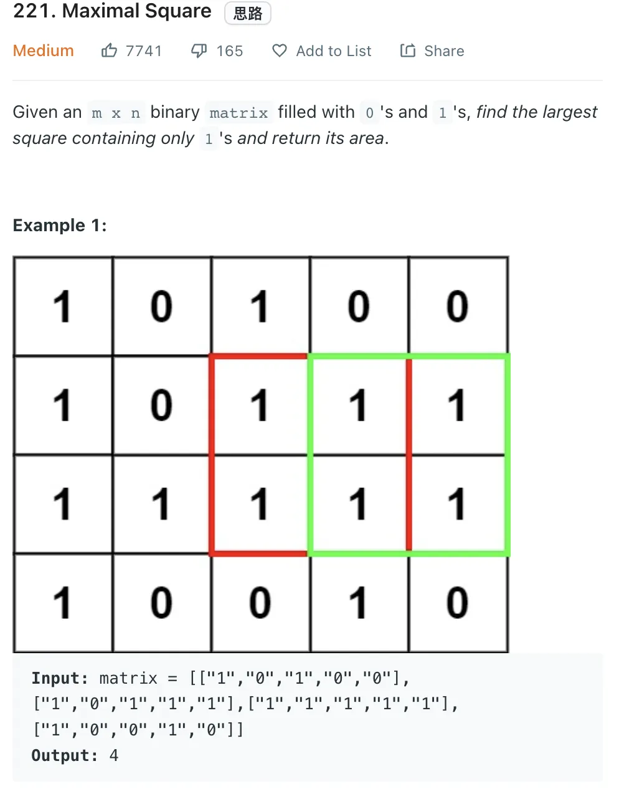
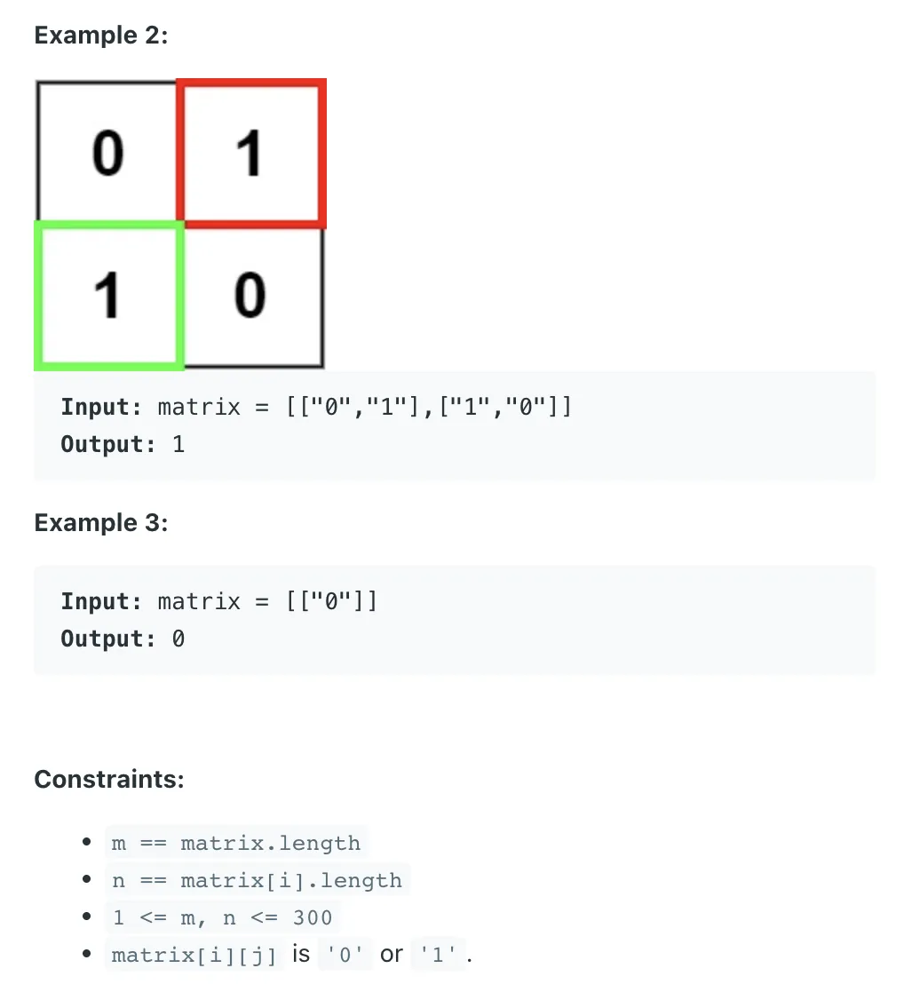

221. Maximal Square
考過的公司：Asked by: Bytedance, Google
Question


先自己想想看 🤔Try it yourself first 🤔
✍🏽 My Solution
Solution #1 [DP]
Runtime: 5 ms, faster than 97.79% of Java online submissions for Maximal Square. Memory Usage: 55.1 MB, less than 85.39% of Java online submissions for Maximal Square.
class Solution {
public int maximalSquare(char[][] matrix) {
int max = 0;
int m = matrix.length, n = matrix[0].length;
// 防止越界,相当于预处理新增第一行、第一列均为0
int[][] dp = new int[m + 1][n + 1];
for (int i = 1; i <= m; i++) {
for (int j = 1; j <= n; j++) {
if (matrix[i-1][j-1] == '1') {
dp[i][j] = 1 + Math.min(Math.min(dp[i][j-1],dp[i-1][j-1]), dp[i-1][j]);
max = Math.max(max, dp[i][j]);
}
}
}
return max * max;
}
}
Explanation (in my words)
- How does their solution work?
- 如何找到最大的正方形？ 看遍歷到的這個點的左上、左、上方最小的值，然後加1
- 為什麼dp要增加額外的行跟列？ 如果沒有多餘的行和列，並且從索引 0 開始遍歷數組，則 dp[i][j] = Math.min(Math.min(dp[i][j-1],dp[i-1] [j]), dp[i-1][j-1])+1; 當 i 或 j 等於 0 時，會給你索引超出範圍的錯誤
- 賈考博LeetCode 221. Maximal Square - 典型的二維dp
- What is the space/time complexity of their solution?
- time: O(m*n)
- space: O(m*n)
Solution #2 [DP 處理邊界]
Runtime: 5 ms, faster than 97.79% of Java online submissions for Maximal Square. Memory Usage: 53.5 MB, less than 98.86% of Java online submissions for Maximal Square.
class Solution {
public int maximalSquare(char[][] matrix) {
int max = 0;
int m = matrix.length, n = matrix[0].length;
int[][] dp = new int[m][n];
for (int i = 0; i < m; i++) {
for (int j = 0; j < n; j++) {
if (matrix[i][j] == '1') {
if (i == 0 || j == 0) { // base case，第一列和第一行的dp值只能为1
dp[i][j] = 1;
} else {
dp[i][j] = 1 + Math.min(Math.min(dp[i][j-1],dp[i-1][j-1]), dp[i-1][j]);
}
max = Math.max(max, dp[i][j]);
}
}
}
return max * max;
}
}
Explanation (in my words)
- How does their solution work?
- 這個寫法跟解法一是同樣的寫法，只是要處理邊界，但我覺得這個對我來說好像比較好理解
- 會忘記是要求面積！！！！
- What is the space/time complexity of their solution?
- time: O(m*n)
- space: O(m*n)